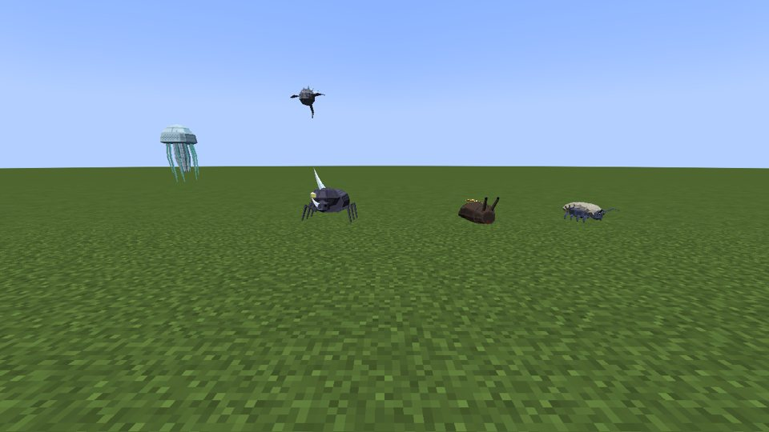
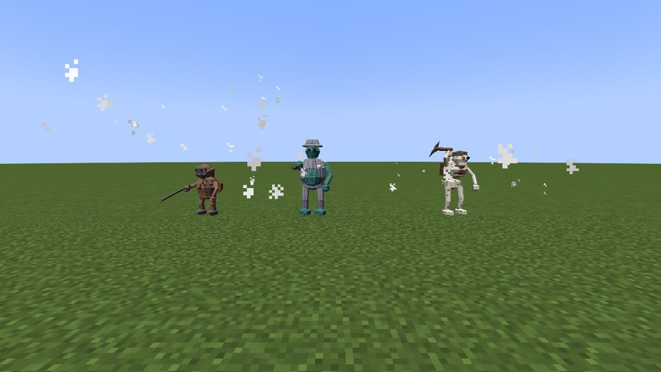
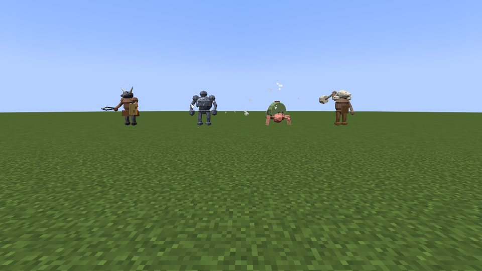
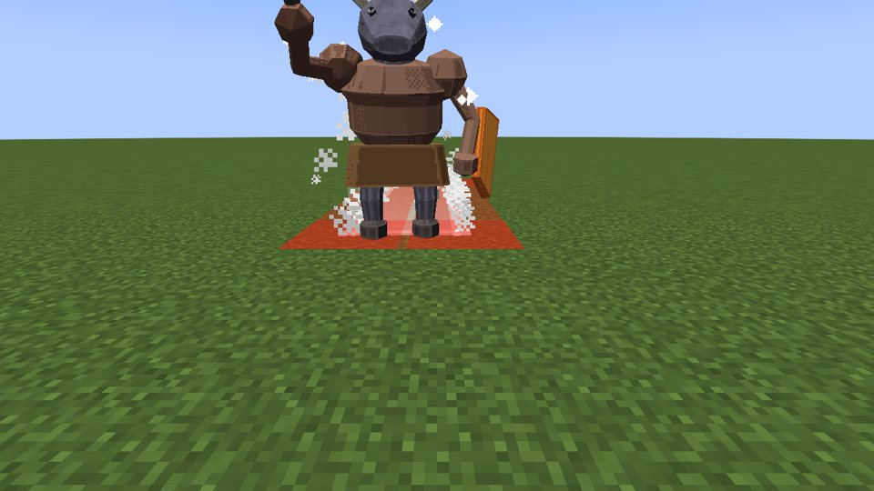
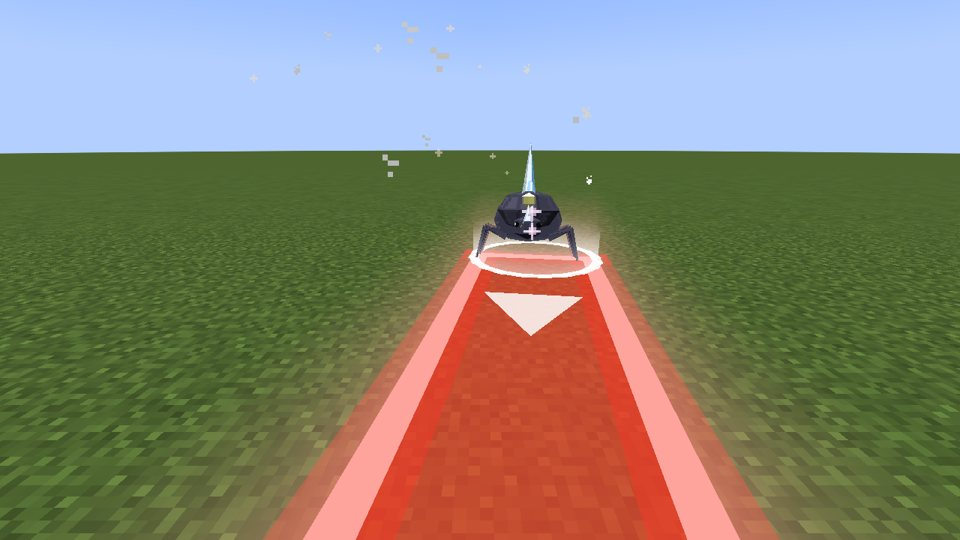
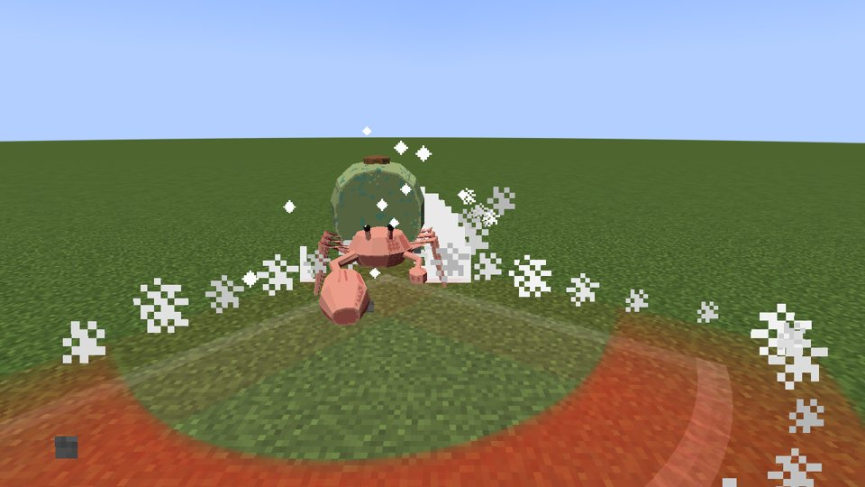
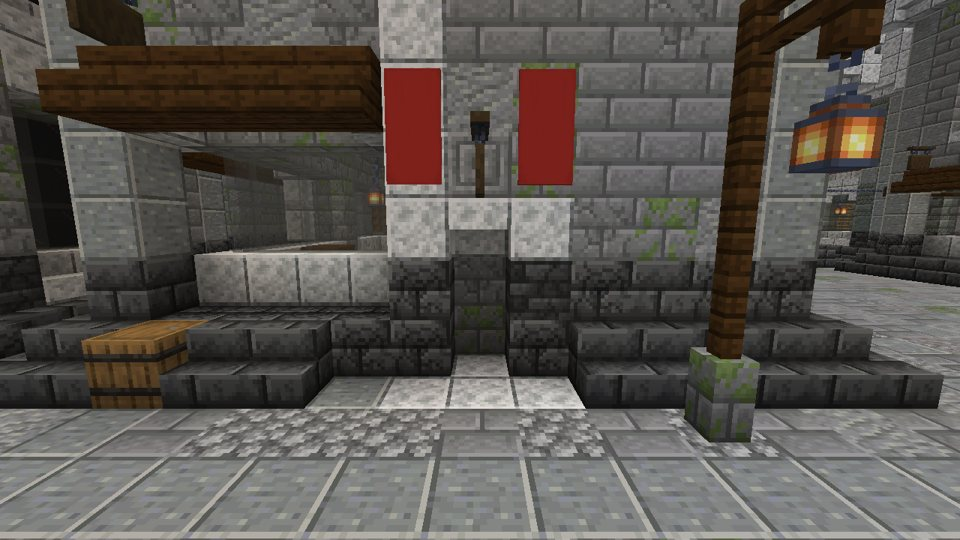
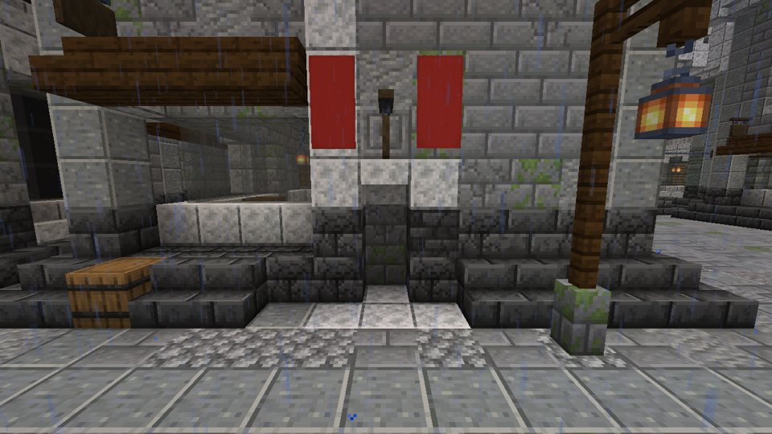
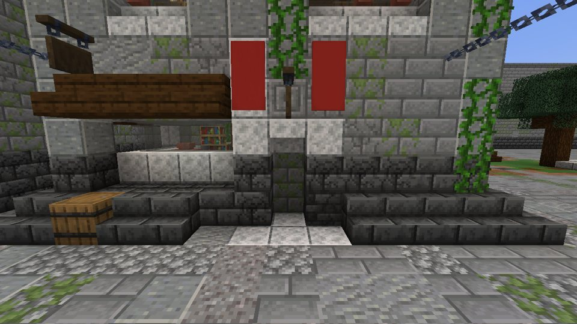
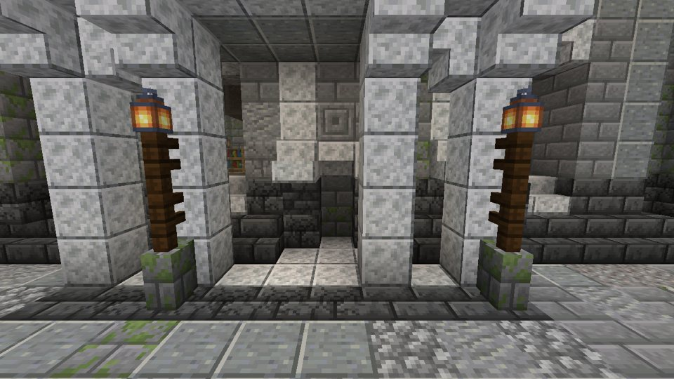

<title>ダンジョンの敵の案 11/02</title>
<meta name="claude:viewport-fit-sides" content="cover">
<link rel="stylesheet" href="https://fonts.googleapis.com/css2?family=DotGothic16&family=Zen+Antique&display=swap">
<style>
/* Layout: one reading column — what was fixed (labels, mounts, text) with proof shots, then the choices (mount roughs, dungeon plan, release), then the pre-1.0 list */
:root {
  --bg: #eef0f2; --panel: #ffffff; --fg: #1c2128; --soft: #58606c; --line: #cfd5dc;
  --accent: #1f6f8b; --gold: #8a5d0c; --pick: #e3f1f6; --done: #2f7a3d; --open: #a3523a;
  --display: "Zen Antique", "Hiragino Mincho ProN", "Yu Mincho", serif;
  --body: "DotGothic16", "Hiragino Sans", "Yu Gothic", system-ui, sans-serif;
}
@media (prefers-color-scheme: dark) { :root:not([data-theme="light"]) {
  --bg: #11151a; --panel: #1a2027; --fg: #e6e2d8; --soft: #a5adb8; --line: #2c3540;
  --accent: #7cc8e0; --gold: #efc25c; --pick: #18323b; --done: #86d08f; --open: #ef9f86; color-scheme: dark } }
:root[data-theme="dark"] {
  --bg: #11151a; --panel: #1a2027; --fg: #e6e2d8; --soft: #a5adb8; --line: #2c3540;
  --accent: #7cc8e0; --gold: #efc25c; --pick: #18323b; --done: #86d08f; --open: #ef9f86; color-scheme: dark }
body { background: var(--bg); color: var(--fg); font-family: var(--body); line-height: 1.75;
  padding-left: max(16px, env(safe-area-inset-left, 0px)); padding-right: max(16px, env(safe-area-inset-right, 0px)); padding-block: 28px 72px; }
main { max-width: 820px; margin: 0 auto; display: grid; gap: 34px; }
h1, h2 { font-family: var(--display); font-weight: 400; text-wrap: balance; margin: 0; }
h1 { font-size: 1.9rem; letter-spacing: .04em; }
h2 { font-size: 1.35rem; color: var(--gold); border-bottom: 1px solid var(--line); padding-bottom: 6px; }
h3 { font-size: 1rem; margin: 0; font-weight: 400; }
p { margin: 0; }
.lede { color: var(--soft); }
section { display: grid; gap: 14px; min-width: 0; }
ul { margin: 0; padding-left: 1.2em; display: grid; gap: 5px; }
code { font-size: .88em; background: var(--pick); padding: 0 4px; border-radius: 3px; overflow-wrap: anywhere; }
.shots { display: grid; grid-template-columns: repeat(auto-fill, minmax(min(100%, 360px), 1fr)); gap: 12px; }
figure { margin: 0; display: grid; gap: 4px; min-width: 0; }
figure img { width: 100%; height: auto; border-radius: 4px; border: 1px solid var(--line); background: #000; }
figcaption { color: var(--soft); font-size: .85rem; }
.qs { display: grid; gap: 12px; }
.q { background: var(--panel); border: 1px solid var(--line); border-radius: 6px; padding: 14px 16px; display: grid; gap: 9px; min-width: 0; }
.q .head { display: flex; flex-wrap: wrap; gap: 4px 12px; align-items: baseline; }
.q .no { color: var(--soft); font-size: .85rem; font-variant-numeric: tabular-nums; }
.q .why { color: var(--soft); font-size: .92rem; }
.pics { display: grid; grid-template-columns: repeat(auto-fill, minmax(min(100%, 230px), 1fr)); gap: 8px; }
.pics figure img { aspect-ratio: 688 / 568; object-fit: cover; }
.pics.wide { grid-template-columns: 1fr; }
.pics.wide figure img { aspect-ratio: 1036 / 300; object-fit: contain; }
.opts { display: grid; gap: 6px; }
.opt { display: flex; gap: 10px; align-items: flex-start; border: 1px solid var(--line); border-radius: 5px; padding: 7px 10px; cursor: pointer; }
.opt input { margin-top: 6px; accent-color: var(--accent); flex: none; }
.opt.on { background: var(--pick); border-color: var(--accent); }
.opt span { min-width: 0; }
.opt small { display: block; color: var(--soft); font-size: .88rem; }
.rec { color: var(--gold); font-size: .82rem; margin-left: 6px; }
textarea { width: 100%; box-sizing: border-box; font: inherit; color: var(--fg); background: var(--bg); border: 1px solid var(--line); border-radius: 4px; padding: 6px 8px; min-height: 2.2em; }
.row { display: flex; gap: 10px; align-items: center; flex-wrap: wrap; }
button { font: inherit; background: var(--accent); color: var(--bg); border: 0; border-radius: 4px; padding: 5px 14px; cursor: pointer; }
button.ghost { background: transparent; color: var(--accent); border: 1px solid var(--accent); }
button:focus-visible, textarea:focus-visible, .opt:focus-within { outline: 2px solid var(--gold); outline-offset: 2px; }
.state { color: var(--soft); font-size: .85rem; }
.bar { position: sticky; top: env(safe-area-inset-top, 0px); z-index: 5; background: var(--bg); border-bottom: 1px solid var(--line); padding-block: 8px; display: flex; flex-wrap: wrap; gap: 8px 16px; align-items: center; }
body::before { content: ""; position: fixed; inset: 0 0 auto; height: env(safe-area-inset-top, 0px); z-index: 10; background: var(--bg); }
.count { font-variant-numeric: tabular-nums; color: var(--soft); font-size: .9rem; }
.fixed { border-left: 3px solid var(--line); padding-left: 12px; color: var(--soft); font-size: .92rem; }
.rel { list-style: none; padding: 0; gap: 8px; }
.rel li { display: flex; gap: 10px; align-items: baseline; }
.rel li > span:last-child { min-width: 0; }
.tag { flex: none; font-size: .78rem; border: 1px solid currentColor; border-radius: 3px; padding: 0 6px; letter-spacing: .06em; }
.tag-done { color: var(--done); } .tag-check { color: var(--accent); } .tag-open { color: var(--open); }
@media (prefers-reduced-motion: reduce) { * { scroll-behavior: auto !important; } }
.load { border-collapse: collapse; width: 100%; font-variant-numeric: tabular-nums; }
.load th, .load td { text-align: left; padding: 6px 8px; border-bottom: 1px solid var(--line); vertical-align: top; overflow-wrap: anywhere; }
.load th { font-weight: 400; color: var(--gold); white-space: nowrap; }
</style>

<main>
  <header style="display:grid;gap:8px">
    <h1>ダンジョンの敵の案</h1>
    <p class="lede">2026-11-02 夜の続きです。小さな直しと都の空き家は済ませ、重い場所も測りました。ダンジョンの道中の敵と中ボスは、選んでもらった 12 体（どれもおすすめ）を作り込み、技と予告をつけて入れました。今選んでほしいものはありません。</p>
  </header>

  <section>
    <h2>入れた（372〜383 = みな推奨）</h2>
    <ul><li>選んでもらった 12 体（372〜383 = みな推奨）を作り込み、四つのダンジョンの敵の表に入れた。鯨骨の坑 = 骨の坑夫・骨甲の団子虫・中ボス 骨鯨の兜の坑頭、潮の洞 = 沈み船の水夫・洞の水母・中ボス 鐘負いの大寄居蟹、雷晶の空洞 = 雷角の兜虫・晶の目玉・中ボス 晶洞の傀儡、熔けた坑道 = 鞴の小鬼・熔岩の蛞蝓・中ボス 牛頭の鍛冶番。ほかの種（射手・旗手・鍵持ちなど）はその土地の敵のまま。</li><li>形はラフの選んだ案を骨に分け、待機・歩き・技・被弾・倒れの動きを付けた。メッシュは閉じていて、関節の検査も 0 件。</li><li>技はどれも予告つき（最短 0.8 秒）。中ボスは技の名前が出て、体力が減ると技が一つ増える。晶洞の傀儡は胸の結晶が弱点（前から 1.5 倍、後ろの岩から 0.6 倍）、牛頭の鍛冶番は盾で前からの傷を 0.35 倍に受ける。</li><li>自己テスト <code>dungeon foes</code>（登録・卵・経験値・形・動き・表・12 体の予告と当たり・盾と胸）と <code>dungeons</code> が通る。ゲームの中で撮影した（並べた姿と技の予告）。</li><li>前の版で建てた都の世界を今の版で開くと、空き家 3 軒の戸が塞がり碑が消えた（市と人はそのまま）。</li></ul>
    <div class="shots"><figure><figcaption>並べた姿: 骨甲の団子虫・熔岩の蛞蝓・雷角の兜虫・洞の水母・晶の目玉</figcaption></figure><figure><figcaption>並べた姿: 鞴の小鬼・沈み船の水夫・骨の坑夫</figcaption></figure><figure><figcaption>並べた姿: 中ボス 4 体（牛頭の鍛冶番・晶洞の傀儡・鐘負いの大寄居蟹・骨鯨の兜の坑頭）</figcaption></figure><figure><figcaption>牛頭の鍛冶番の盾打ちの予告</figcaption></figure><figure><figcaption>雷角の兜虫の雷の帯の予告</figcaption></figure><figure><figcaption>鐘負いの大寄居蟹の大鋏の予告</figcaption></figure><figure><figcaption>前の版の都を今の版で開いた: 旧厩舎の戸が塞がった</figcaption></figure></div>
  </section>

  <section>
    <h2>やったこと</h2>
    <ul><li>ダンジョンの主 3 体の関節: 炉負いの巨人の頭が胴から離れていた（うなずくと浮く）→ 首を足した。大百足の頭の節と大蜥蜴の背の結晶の付け根を深く埋めた。メッシュの検査は巨人が 0 件。残る 2 件（大百足の頭・大蜥蜴の結晶）は部品が多いことによる検査の見かけで、絵では隙間が無い。</li><li>骨掘りの顎飾りが襟の下に隠れていた: 胸に下げる首飾りの位置が胸の防具の内側だった → 防具の外へ（ダンジョンの顎飾りと、野の装備の胸の首飾り 4 品も同じ位置なので一緒に）。撮影で胸の上に見える。</li><li>撮影のあとで直した 3 か所（潮の洞の床・沈んだ船・溶岩の区間の縁）と主 4 体を撮り直して確かめた。</li><li>都の空き家 3 軒（旧厩舎・地図屋・空見の館）: 戸を壁で塞ぎ、碑を外した。前の版で建てた都も、入ったときに同じ形に置き直す（前に開いた空見の館の戸口も塞ぐ）。自己テスト <code>capital doors</code> に入れた。</li><li>配布物から自己テストのコードを外す: 調べると jar 74 MB のうち自己テストは圧縮で約 2.2 MB（3% ほど）。外すには 200 ファイル余りを作り替えるので、正式版の前にはしない。jar の大きさのもとは低ポリの形のデータ（約 81 MB を詰めたもの）と音。</li></ul>
    <div class="shots"><figure><figcaption>旧厩舎の戸（塞いだ。碑なし）</figcaption></figure><figure><figcaption>地図屋の戸（塞いだ。碑なし）</figcaption></figure><figure><figcaption>空見の館の戸（塞いだ。碑なし）</figcaption></figure></div>
  </section>

  <section>
    <h2>重さ（サーバーの 1 tick）</h2>
    <p class="fixed">20 秒の間の 1 tick の時間（平均・遅いほうから 5%・いちばん遅い）。50 ms を超えると遅れが出る。どこも平均は 14 ms 以下。いちばん遅い一回（都 196 ms・野 151 ms）は、着いた直後に土地を読み込んだとき。</p>
    <table class="load"><tbody><tr><th scope="row">都の広場</th><td>平均 9.9 ms・遅いほうの 5% 19.1 ms・いちばん遅い 196 ms（敵や人など 61）</td></tr><tr><th scope="row">野（鯨骨の坑の入口のあたり）</th><td>平均 6.1 ms・遅いほうの 5% 13.2 ms・いちばん遅い 151 ms（敵や人など 61）</td></tr><tr><th scope="row">ダンジョンの主の間（大百足と戦う）</th><td>平均 2.8 ms・遅いほうの 5% 10.6 ms・いちばん遅い 14 ms（敵や人など 3）</td></tr><tr><th scope="row">あいだの塔の戦い</th><td>平均 13.8 ms・遅いほうの 5% 20.6 ms・いちばん遅い 44 ms（敵や人など 9）</td></tr></tbody></table>
  </section>

  <div class="bar">
    <span class="count" id="count">選んだ数 0 / 0</span>
    <button type="button" id="allrec">まだ選んでいないものを、おすすめで保存</button>
    <span class="state" id="dbstate">選ぶと保存されます（この画面を開いた人みなで同じ記録）。</span>
  </div>

  <section>
    <h2>ダンジョン専用の敵の形（372〜383。答えた）</h2>
    <p class="fixed">一つのダンジョンに道中の敵 2 種と中ボス 1 体。絵は斜め前・横・斜め上の後ろ。左の黄色い目盛りが人の背（1.8 ブロック）。形はラフで、選んだ案を作り込み（動き・絵・骨）、ゲームの中で撮ってから入れます。</p>
    <div class="qs" data-group="foe"></div>
  </section>
</main>

<script>
const QUESTIONS = [{"id": "q372", "no": 372, "title": "骨掘りの坑夫（鯨骨の坑・道中）", "img": "digger", "wide": true, "why": "人ほどの大きさの道中の敵。今は骸の歩兵・肋の射手を使っている。", "options": [{"v": "a", "label": "A 骨の坑夫", "sub": "腰の曲がった骸の坑夫。肋骨の籠の胸・布の帽子・鶴嘴を担ぎ、背に光る灯りの籠。振り下ろし（前の短い帯の予告）", "rec": true}, {"v": "b", "label": "B 鯨骨の兜の坑夫", "sub": "鯨の頭骨を兜にかぶったずんぐりした坑夫。両手の大きな円匙で前を薙ぐ（扇の予告）", "rec": false}, {"v": "c", "label": "C 四つ腕の掘り骸", "sub": "腕が四本の骸。前かがみで這い、上の二本の刃の腕で二度斬る", "rec": false}, {"v": "none", "label": "作らない（その土地の今の敵のまま）"}], "group": "foe"}, {"id": "q373", "no": 373, "title": "骨喰いの小虫（鯨骨の坑・道中の群れ）", "img": "grub", "wide": true, "why": "膝ほどの小さな敵。3〜5 匹で出る。", "options": [{"v": "a", "label": "A 骨喰いの幼虫", "sub": "白く太い節の芋虫。骨の大顎で噛みつく", "rec": false}, {"v": "b", "label": "B 骨甲の団子虫", "sub": "骨の板の甲を負う団子虫。丸まって転がり、まっすぐ突っ込む（線の予告。横へ避ける）", "rec": true}, {"v": "c", "label": "C 骨の壁蜘蛛", "sub": "小さな頭骨を胴にした六本脚の蜘蛛。壁と天井を這い、上から落ちてくる（足もとの円の予告）", "rec": false}, {"v": "none", "label": "作らない（その土地の今の敵のまま）"}], "group": "foe"}, {"id": "q374", "no": 374, "title": "坑の頭（鯨骨の坑・中ボス）", "img": "foreman", "wide": true, "why": "一層目の終わりの中ボス。倒すと二層目への扉が開く。今は岩猪の名のある大物。", "options": [{"v": "a", "label": "A 骨鯨の兜の坑頭", "sub": "人の倍ほどの大男。鯨の頭骨の兜・骨の肩当て、担いだ大きな骨の槌で地を割る（割れ目が前へ走る予告）", "rec": true}, {"v": "b", "label": "B 骨と岩の掘り機", "sub": "坑夫の作った掘る機械。胸の奥に光る鉱石（弱点）、右腕は回る錐で突進", "rec": false}, {"v": "c", "label": "C 鉱石負いの大土竜", "sub": "背に光る鉱石の房の大土竜。潜って足もとから出る（主の大百足と似た動きになる）", "rec": false}, {"v": "none", "label": "作らない（その土地の今の敵のまま）"}], "group": "foe"}, {"id": "q375", "no": 375, "title": "沈み船の水夫（潮の洞・道中）", "img": "sailor", "wide": true, "why": "人ほどの道中の敵。今は岩場の蟹・霧の釣り手などを使っている。", "options": [{"v": "a", "label": "A 沈み船の水夫", "sub": "ふくれた水死人の水夫。縞の服に藤壺。銛を投げる（線の予告）。遠くから", "rec": true}, {"v": "b", "label": "B 珊瑚の骸の水夫", "sub": "珊瑚の生えた骸。片目の眼帯と赤い腰帯、曲刀で二度斬る", "rec": false}, {"v": "c", "label": "C 藻を巻いた空ろの水夫", "sub": "中身のない藻の衣の人形。光る魚の角灯を下げ、近くの水を引き寄せる", "rec": false}, {"v": "none", "label": "作らない（その土地の今の敵のまま）"}], "group": "foe"}, {"id": "q376", "no": 376, "title": "洞の小さな軟体（潮の洞・道中）", "img": "octoling", "wide": true, "why": "小さめの敵。満ち引きの仕掛けと合わせて出る。", "options": [{"v": "a", "label": "A 洞の小蛸", "sub": "人の膝ほどの蛸。八本の腕で這い、墨を吐いて目を眩ます（主の大蛸と似る）", "rec": false}, {"v": "b", "label": "B 浮かぶ灯烏賊", "sub": "宙を泳ぐ小さな烏賊。胴の灯りが光り、長い触手で叩く", "rec": false}, {"v": "c", "label": "C 洞の水母", "sub": "傘の下に光る糸を垂らして漂う。触れると痺れる。満ち潮で水の上を流れてくる", "rec": true}, {"v": "none", "label": "作らない（その土地の今の敵のまま）"}], "group": "foe"}, {"id": "q377", "no": 377, "title": "沈み船の大物（潮の洞・中ボス）", "img": "bellcrab", "wide": true, "why": "一層目の終わりの中ボス。今は潮蟹の名のある大物。", "options": [{"v": "a", "label": "A 鐘負いの大寄居蟹", "sub": "沈んだ船の鐘を殻にした大寄居蟹。鐘を鳴らすと波が来る（足もとの輪の予告）。鐘の国の話と合う", "rec": true}, {"v": "b", "label": "B 船骸負いの蟹", "sub": "沈んだ船の舳先を背負う蟹。折れた帆柱と破れた帆、片方の鋏の錨を振り回す", "rec": false}, {"v": "c", "label": "C 藤壺の大海老", "sub": "藤壺に覆われた長い大海老。大きな二本の鋏、尾を打って跳ねて下がる", "rec": false}, {"v": "none", "label": "作らない（その土地の今の敵のまま）"}], "group": "foe"}, {"id": "q378", "no": 378, "title": "晶の虫（雷晶の空洞・道中）", "img": "beetle", "wide": true, "why": "膝の上ほどの道中の敵。今は雷の狼・静電の毛玉などを使っている。", "options": [{"v": "a", "label": "A 晶殻の甲虫", "sub": "背の殻が青い結晶。前からの傷を殻で受け、結晶の角で突く", "rec": false}, {"v": "b", "label": "B 雷角の兜虫", "sub": "二本の大きな結晶の角。角の間に雷を溜めて（光る予告）、前へ放つ", "rec": true}, {"v": "c", "label": "C 晶背の岩亀虫", "sub": "平たい岩の亀のような虫。背の結晶の柱を割ると弱る。遅いが硬い", "rec": false}, {"v": "none", "label": "作らない（その土地の今の敵のまま）"}], "group": "foe"}, {"id": "q379", "no": 379, "title": "晶の飛ぶもの（雷晶の空洞・道中）", "img": "bat", "wide": true, "why": "宙の敵。結晶の仕掛けの部屋に出る。", "options": [{"v": "a", "label": "A 晶翼の蝙蝠", "sub": "翼に結晶の生えた蝙蝠の群れ。上から雷の粉を落とす", "rec": false}, {"v": "b", "label": "B 晶の目玉", "sub": "結晶の目玉が小さな翼で浮く。見つめた所に雷を落とす（足もとの円の予告）", "rec": true}, {"v": "c", "label": "C 雷の蛾", "sub": "翅に結晶の鱗粉が光る大きな蛾。羽ばたくと痺れの粉が舞う（まわりの円）", "rec": false}, {"v": "none", "label": "作らない（その土地の今の敵のまま）"}], "group": "foe"}, {"id": "q380", "no": 380, "title": "晶の大物（雷晶の空洞・中ボス）", "img": "golem", "wide": true, "why": "一層目の終わりの中ボス。今は嵐の羊の名のある大物。", "options": [{"v": "a", "label": "A 晶洞の傀儡", "sub": "割れた晶洞を胴にした岩の巨人。胸の内側の結晶が弱点、大きな岩の拳で叩く", "rec": true}, {"v": "b", "label": "B 晶の大蛇", "sub": "岩の節に結晶の生えた大蛇。とぐろを巻き、鎌首から雷を吐く（前の帯の予告）", "rec": false}, {"v": "c", "label": "C 三つ晶の芯", "sub": "光る芯のまわりを三つの結晶の板が回る。板で薙ぎ、板を割ると芯がむき出しに", "rec": false}, {"v": "none", "label": "作らない（その土地の今の敵のまま）"}], "group": "foe"}, {"id": "q381", "no": 381, "title": "炉の坑夫（熔けた坑道・道中）", "img": "miner", "wide": true, "why": "人ほどの道中の敵。今は灰の殻・灰の引きずりなどを使っている。", "options": [{"v": "a", "label": "A 灰の坑夫", "sub": "灰をかぶった坑夫。顔に鉄の覆い、赤く焼けた鶴嘴（鯨骨の坑の坑夫と似る）", "rec": false}, {"v": "b", "label": "B 鞴の小鬼", "sub": "背に鞴を負った背の低い小鬼。鉄の仮面と長い火掻き棒、鞴で前へ火を吹きつける（扇の予告）", "rec": true}, {"v": "c", "label": "C 鉱滓の小人形", "sub": "冷えた鉱滓の塊の小さな人形。倒れると熔岩溜まりが残る", "rec": false}, {"v": "none", "label": "作らない（その土地の今の敵のまま）"}], "group": "foe"}, {"id": "q382", "no": 382, "title": "熔岩の這うもの（熔けた坑道・道中）", "img": "slug", "wide": true, "why": "膝ほどの道中の敵。溶岩の区間の仕掛けと合わせて出る。", "options": [{"v": "a", "label": "A 熔岩の蛞蝓", "sub": "黒い皮の大きな蛞蝓。背の割れ目が光り、通った跡にしばらく火が残る", "rec": true}, {"v": "b", "label": "B 炉殻の蝸牛", "sub": "小さな炉を殻にした蝸牛。殻の口から火の玉を撃つ（遠く）", "rec": false}, {"v": "c", "label": "C 熾火の山椒魚", "sub": "熾火の斑の山椒魚。溶岩の中を泳ぎ、跳び出して噛む", "rec": false}, {"v": "none", "label": "作らない（その土地の今の敵のまま）"}], "group": "foe"}, {"id": "q383", "no": 383, "title": "炉の番（熔けた坑道・中ボス）", "img": "warden", "wide": true, "why": "一層目の終わりの中ボス。今は灰の蜥蜴の名のある大物。", "options": [{"v": "a", "label": "A 鎖の炉番", "sub": "背に炉を負った仮面の番人。両手の鎖の先の焼けた鉄球を振り回す（主の巨人も炉を負うので似る）", "rec": false}, {"v": "b", "label": "B 牛頭の鍛冶番", "sub": "牛の頭の大男。左手に焼けた鉄の板の盾（前の傷を受ける）、右手の大きな火ばさみで掴んで投げる", "rec": true}, {"v": "c", "label": "C 歩く炉", "sub": "四本の鉄の脚で歩く炉。炉の口が顔、口から熔けた鉄を吐き、鎖の腕で引っかける", "rec": false}, {"v": "none", "label": "作らない（その土地の今の敵のまま）"}], "group": "foe"}];
const picks = {};
let db = null;
const stateEl = document.getElementById("dbstate");
const countEl = document.getElementById("count");

function card(q) {
  const c = document.createElement("div"); c.className = "q";
  const head = document.createElement("div"); head.className = "head";
  const n = document.createElement("span"); n.className = "no"; n.textContent = String(q.no); head.append(n);
  const h = document.createElement("h3"); h.textContent = q.title; head.append(h);
  c.append(head);
  if (q.why) { const w = document.createElement("p"); w.className = "why"; w.textContent = q.why; c.append(w); }
  if (q.img) {
    const pics = document.createElement("div"); pics.className = q.wide ? "pics wide" : "pics";
    for (const o of q.options) {
      if (o.v === "none") continue;
      const f = document.createElement("figure");
      const im = document.createElement("img"); im.src = "img/" + q.img + "_" + o.v + ".jpg"; im.alt = o.label; im.loading = "lazy";
      if (q.wide) { im.width = 1036; im.height = 300; } else { im.width = 688; im.height = 568; }
      const cap = document.createElement("figcaption"); cap.textContent = o.label;
      f.append(im, cap); pics.append(f);
    }
    c.append(pics);
  }
  const opts = document.createElement("div"); opts.className = "opts";
  const cur = picks[q.id] || {};
  for (const o of q.options) {
    const lab = document.createElement("label"); lab.className = "opt" + (cur.pick === o.v ? " on" : "");
    const inp = document.createElement("input"); inp.type = "radio"; inp.name = q.id; inp.id = q.id + "_" + o.v; inp.value = o.v; inp.checked = cur.pick === o.v;
    inp.addEventListener("change", () => save(q.id, o.v, null));
    const t = document.createElement("span"); t.textContent = o.label;
    if (o.rec) { const r = document.createElement("span"); r.className = "rec"; r.textContent = "おすすめ"; t.append(r); }
    if (o.sub) { const s = document.createElement("small"); s.textContent = o.sub; t.append(s); }
    lab.append(inp, t); opts.append(lab);
  }
  c.append(opts);
  const ta = document.createElement("textarea"); ta.id = q.id + "_note"; ta.placeholder = "ひとこと（あれば）"; ta.value = cur.note || "";
  const row = document.createElement("div"); row.className = "row";
  const b = document.createElement("button"); b.type = "button"; b.className = "ghost"; b.textContent = "ひとことを保存";
  const st = document.createElement("span"); st.className = "state"; st.textContent = cur.pick ? "保存済み" : "";
  b.addEventListener("click", () => save(q.id, (picks[q.id] || {}).pick || "", ta.value, st));
  row.append(b, st);
  c.append(ta, row);
  return c;
}

function render() {
  for (const box of document.querySelectorAll(".qs")) {
    const g = box.dataset.group;
    box.textContent = "";
    for (const q of QUESTIONS) if (q.group === g) box.append(card(q));
  }
  const done = QUESTIONS.filter(q => (picks[q.id] || {}).pick).length;
  countEl.textContent = "選んだ数 " + done + " / " + QUESTIONS.length;
}

async function save(id, pick, note, st) {
  const prev = picks[id] || {};
  picks[id] = { pick, note: note === null ? (prev.note || "") : note };
  render();
  if (!db) { stateEl.textContent = "この画面では保存できません（選んだものはチャットで伝えてください）。"; return; }
  try {
    await db.collection("choices").doc(id).set({ pick: picks[id].pick, note: picks[id].note, at: new Date().toISOString() });
    if (st) st.textContent = "保存しました";
  } catch (e) {
    stateEl.textContent = "保存できませんでした: " + (e && e.message ? e.message : "不明");
  }
}

document.getElementById("allrec").addEventListener("click", async () => {
  const todo = QUESTIONS.filter(q => !(picks[q.id] || {}).pick);
  if (!todo.length) { stateEl.textContent = "どれも選んであります。"; return; }
  for (const q of todo) {
    const rec = q.options.find(o => o.rec);
    if (rec) await save(q.id, rec.v, null);
  }
  if (db) stateEl.textContent = todo.length + " 件をおすすめで保存しました。";
});

render();
(async () => {
  try { db = await window.claude?.use?.("db"); } catch (e) { db = null; }
  if (!db) { stateEl.textContent = "この画面では保存できません（選んだものはチャットで伝えてください）。"; return; }
  const timer = setTimeout(() => { stateEl.textContent = "記録の読み込みに時間がかかっています。選ぶと保存は試みます。"; }, 10000);
  db.collection("choices").onSnapshot((snap) => {
    clearTimeout(timer);
    for (const d of snap.docs) { const v = d.data() || {}; picks[d.id] = { pick: String(v.pick || ""), note: String(v.note || "") }; }
    stateEl.textContent = "選ぶと保存されます（この画面を開いた人みなで同じ記録）。";
    const active = document.activeElement && document.activeElement.tagName === "TEXTAREA";
    if (!active) render();
  }, () => { clearTimeout(timer); stateEl.textContent = "記録を読めませんでした。選んだものはチャットで伝えてください。"; });
})();
</script>
